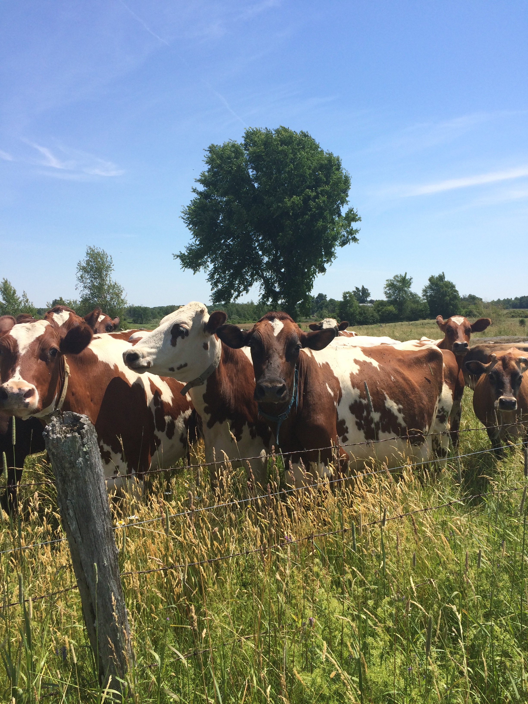
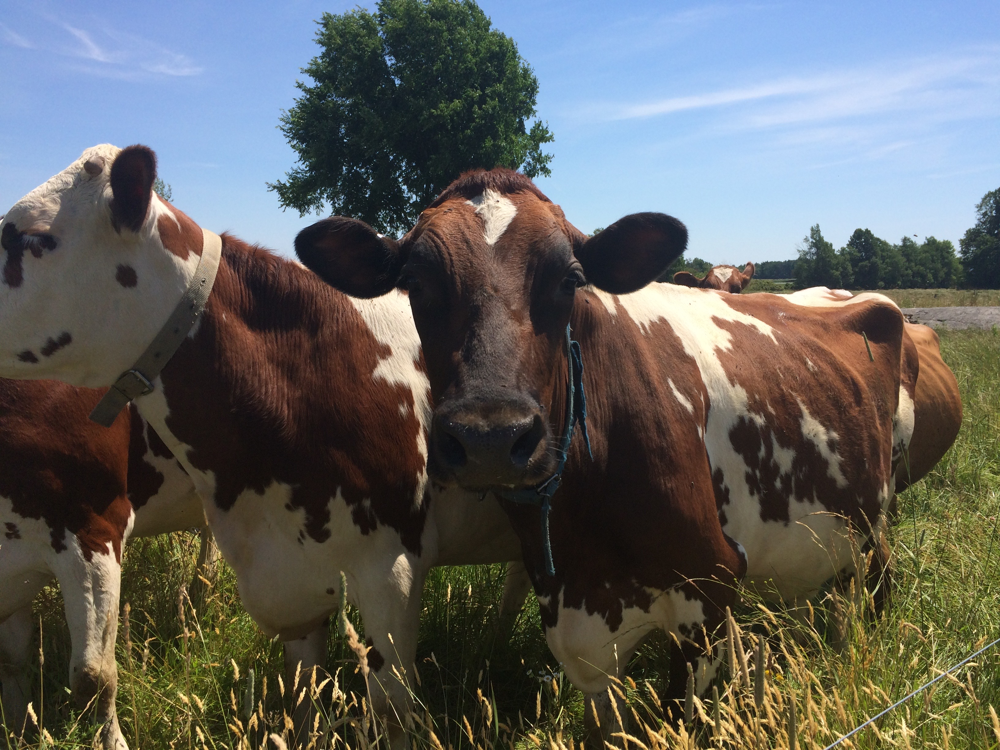
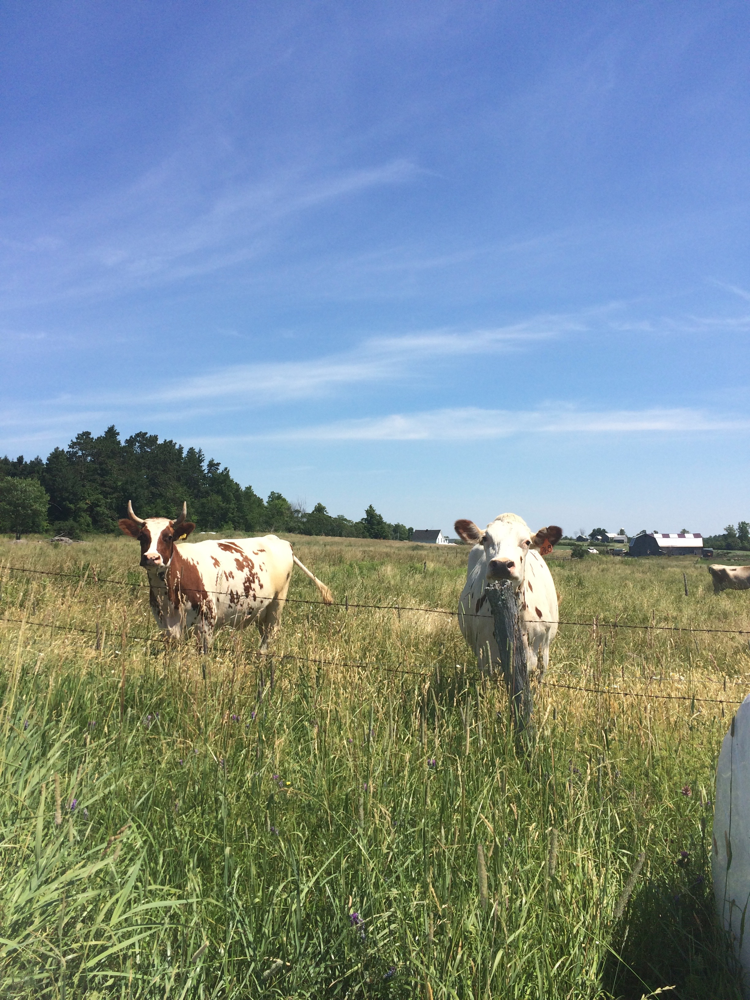
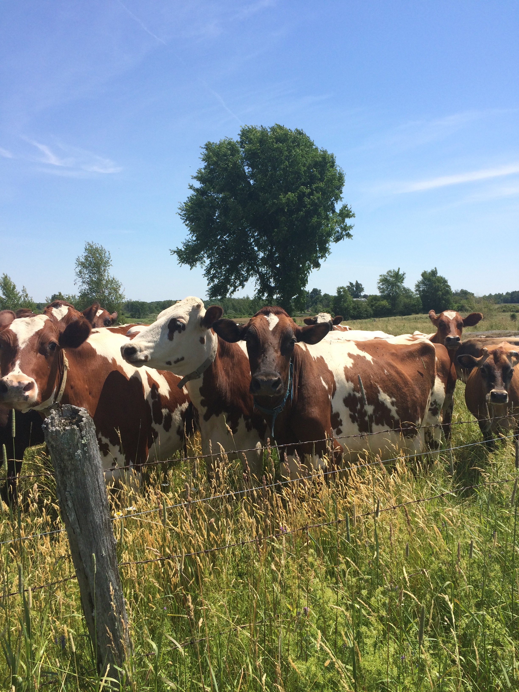
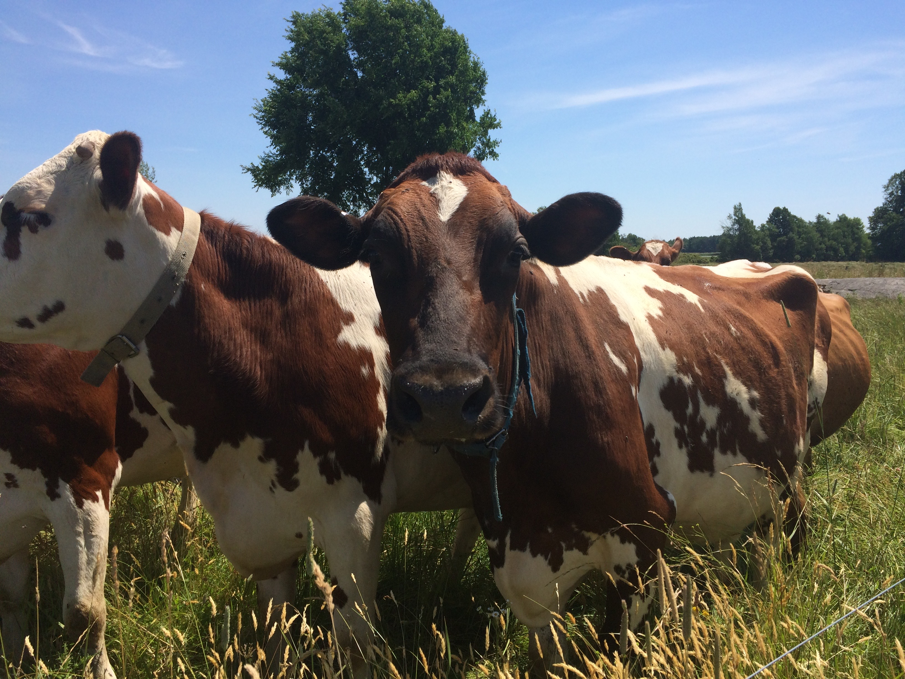
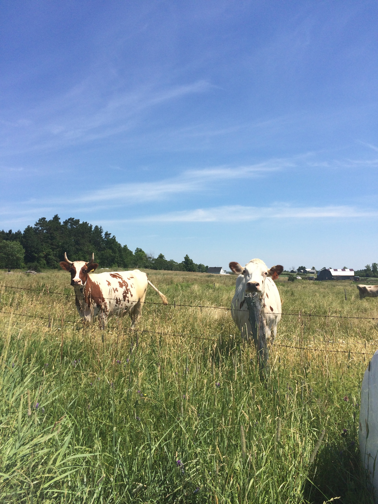
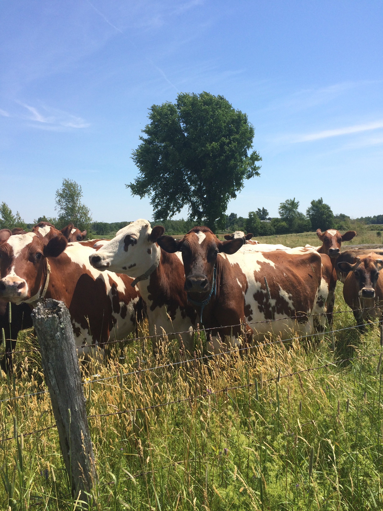
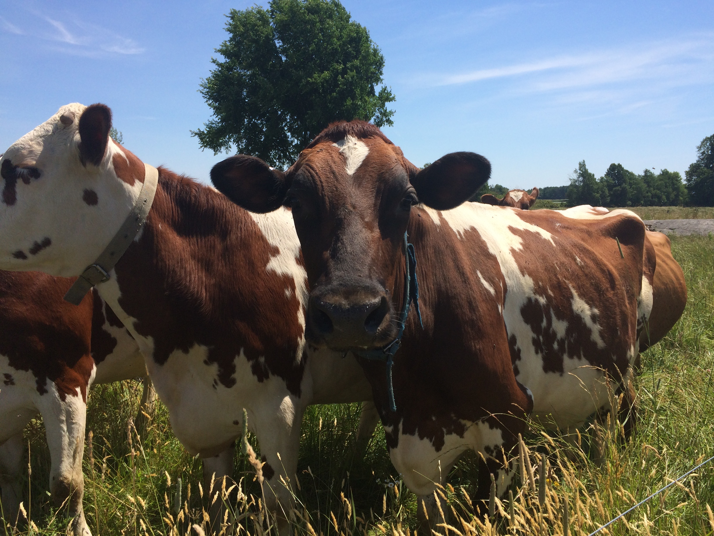
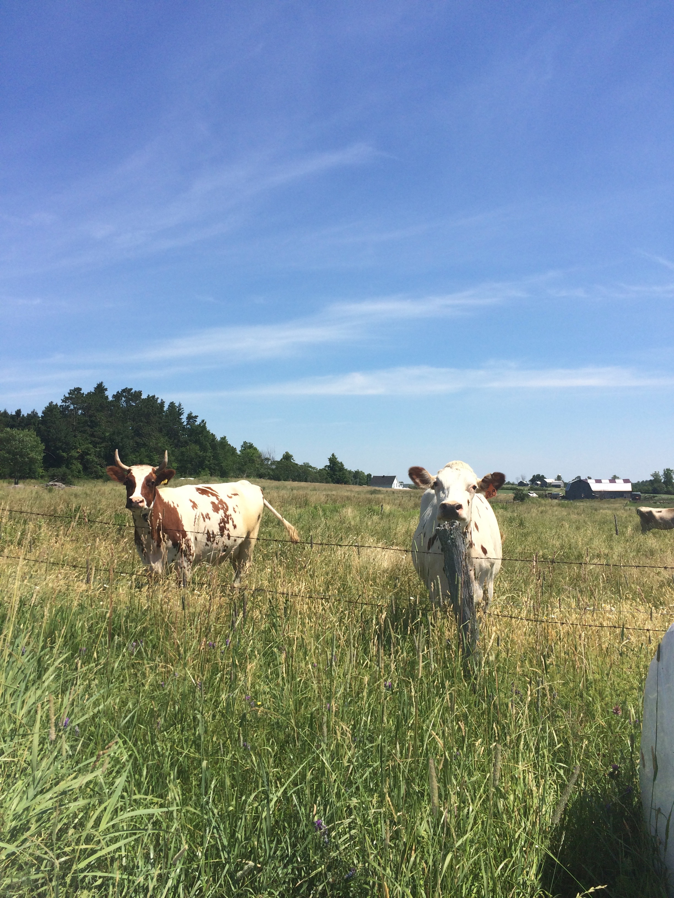

The Ayrshire breed originated from Scotland in the County of Ayr before to 1800. In its development process, it was referred to first as the Cunningham, then the Dunlop, and finally, the Ayrshire. Its characteristics gradually became established to consider it a distinct breed and in 1786.
Ayrshires are red and white, and purebred Ayrshires only produce red and white offspring. The red color is a reddish-brown mahogany that varies in shade from very light to very dark. There is no discrimination or registry restriction on color patterns for Ayrshires. The color markings range from nearly all red to virtually all white. The spots are usually very jagged at the edges and often small and scattered over the entire body of the cow. The Ayrshire Cattle are a moderate breed for the use of butterfat, and they have a relatively high protein component. An actual average of all the Ayrshires that were on official ABA programs in 2002 was 17,230 pounds of milk with 665 pounds of fat and 542 pounds of protein.


